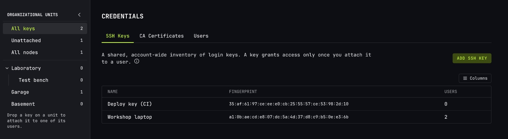
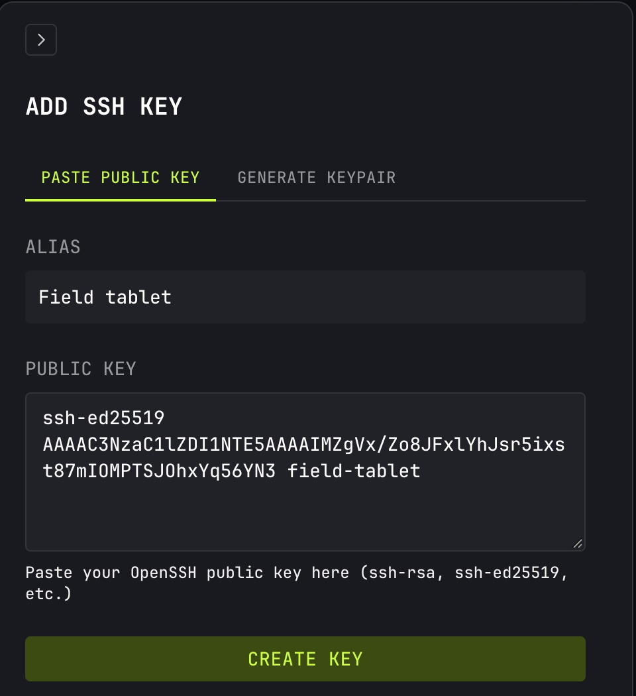
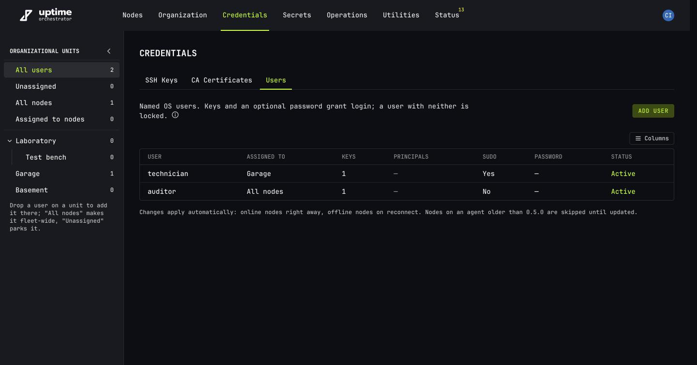
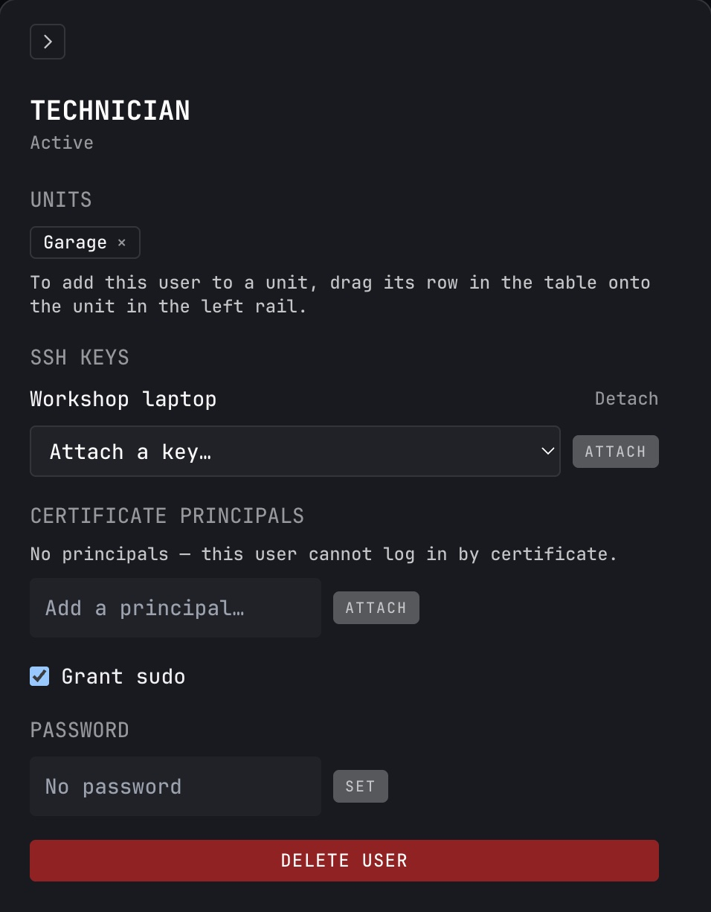
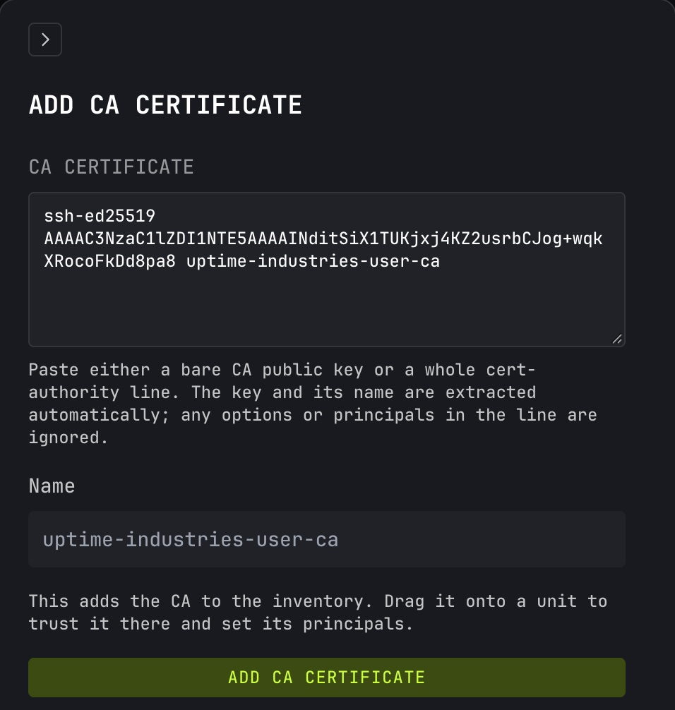
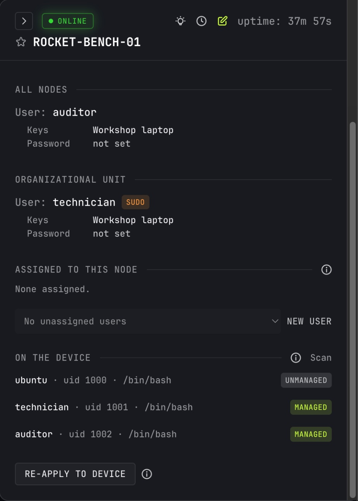

Access: SSH keys and device users
Keep an inventory of SSH keys, define the Linux users the agent creates on your nodes, and scope them to the whole account, a unit or one node.
The Credentials page decides who can log in to your devices over SSH. You describe the users you want — name, keys, sudo, optional password — and where they apply. The agent on every node in that scope creates and maintains the matching Linux accounts. You never edit authorized_keys by hand.
Scope works like everything else attached to a unit: see Organizational units and policies for the model. In short, a node receives the users of its own node, its unit, the parent unit and the whole account, and a user defined closer to the node replaces a same-named user from further up.
The model in three sentences
- An SSH key is inventory. Adding one grants nothing.
- A user is a Linux account the agent creates on every node in its scope. It logs in with the keys attached to it, an optional password, or an SSH certificate.
- A CA certificate is a certificate authority your nodes trust, so users can log in with certificates you sign with your own tooling.
The page has a tab for each: SSH Keys, CA Certificates and Users. The left rail filters each tab by scope: Unassigned, All nodes (account-wide), Assigned to nodes, and each unit.
SSH Keys

Each row shows the key's Name, its Fingerprint and how many Users it is attached to. The example account has two: Workshop laptop, attached to both users, and Deploy key (CI), attached to none — so it opens nothing.
To add a key, click Add SSH key. Under Paste public key, give it an Alias and paste one line in OpenSSH format (ssh-ed25519 …, ssh-rsa …). Click Create Key.

The Generate keypair tab is different: the platform creates an ed25519 keypair, keeps the private key encrypted and uses it for its own outbound SSH when adopting devices over the network. You can download the public part afterwards. It is not a key for you to log in with.
Click a key to see its details: alias, type, fingerprint, dates, Download Public Key, Edit (rename or replace the key) and Delete. You can also drag a key onto a unit in the rail; the dialog that opens asks which user in that unit gets the key, or creates a new one, because a key always belongs to a named user, never to a unit.
Users

The columns are User (the Linux username), Assigned to (the scope), Keys, Principals (certificate names), Sudo, Password and Status. Status is Active when the user has at least one way to log in, and Locked when it has neither a key, a password nor a usable certificate principal.
The example account has two users:
technician— sudo, key Workshop laptop, scope Garage. It exists on every Garage node.auditor— no sudo, key Workshop laptop, scope All nodes. It exists on every node in the account.
Add a user
- In the rail, select where the user should apply (a unit, or All nodes). With All users selected, the user starts unassigned.
- Click Add user. The panel names the scope: "The user will be created in: Garage."
- Fill in Username, tick or clear Grant sudo (ticked by default), optionally set a Password, optionally list Certificate principals, and attach one or more SSH keys with Attach.
- Click Create user.

How the fields combine on the device:
| You set | Result on the node |
|---|---|
| Key(s), no password | Key login only. With Grant sudo, sudo runs without a password (there is nothing to prompt for). |
| Key(s) and a password | Key or password login (if the unit allows password login). With Grant sudo, sudo asks for the password. |
| No key, no password, no principal | The account is created locked. |
| Certificate principals | The user can also log in with a certificate carrying one of those names, on nodes that trust a CA. |
The password never reaches the device in clear text: the platform sends only a salted hash. Whether sshd accepts passwords at all is the Password login policy on the Organization page.
Change or remove a user
Click a user to open its panel. Every change here is saved immediately — there is no Save button.

- Units — the units the user belongs to. A user can be in several units; click × to take it out of one. To add it to a unit, drag its row in the table onto the unit in the rail. All nodes makes it fleet-wide, Unassigned parks it (it then applies to no node).
- SSH keys — Attach a key… and Attach, or Detach. Detaching the last key (with no password) locks the user on the devices.
- Grant sudo, Password (Set, Clear password).
- Delete user — asks for confirmation.
What deleting does on the device: on the next apply the Linux account is locked, not removed. Its home directory and files stay. The same happens when a user loses its last key and has no password; adding a key back unlocks it. The platform only ever manages accounts it created itself: users you made by hand on a node are never touched.
Users for a single node
You can also assign a user to one node, from that node's panel (Properties → Credentials → Assigned to this node, then New user or pick an unassigned user). Use this for one-off or test access; for regular use, grant access per unit.
CA Certificates
The CA Certificates tab holds the public keys of certificate authorities you trust. Click Add CA certificate, paste a bare CA public key or a whole cert-authority line, and optionally give it a Name (otherwise the key's comment is used). Then drag the CA onto a unit or All nodes to trust it there.

A node accepts a certificate signed by a trusted CA when the certificate names one of the Certificate principals of a user. Issue and sign certificates with your own tooling; the platform stores only the CA's public key.
How changes reach the devices
The line under the users table says it: "Changes apply automatically: online nodes right away, offline nodes on reconnect. Nodes on an agent older than 0.5.0 are skipped until updated."
In detail:
- Every change to a user, its keys or its scope, and every change to the Password login policy, sends the resolved access configuration to the affected nodes.
- An offline node receives it when it reconnects. A node booted into recovery (netboot) holds it until it is back on its installed OS.
- When a node reports in, the platform compares what the node last confirmed with what it should have, and re-sends if they differ.
To see what a particular node has, open it on the Nodes page and go to Properties → Credentials.

This view shows the Password login setting for the node (with Inherit, Allowed and Blocked), the users the node gets from each level (All nodes, Organizational unit, Assigned to this node), and:
- On the device → Scan reads the real login accounts on the node's disk (the node must be online). Accounts the platform created are managed; anything else, such as the image's stock
ubuntuuser, is unmanaged and never changed. - Re-apply to device re-sends the access list if the node looks out of sync. Normally you never need it.
Every apply also appears in the node's command history as Apply access configuration.
The provisioning login
When the platform installs an OS on a node, it writes the node's access users into the new system before the first boot (the Provision access step). Master tokens also carry Default Credentials — a default username, password and SSH key — for devices adopted with them; see Secrets and variables.
Avoid locking yourself out
Next: Secrets and variables.